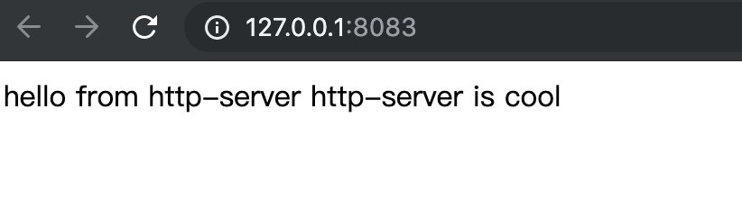

随记
脚本
TODO:熟知
1 | # 备份文件 |
ssh
1 | # 生成 |
vim 多行删除
- 首先在命令模式下，输入
:set nu显示行号，:set nonu隐藏行号； - 通过行号确定你要删除的行；
- 命令输入
:32,65d,回车键，32-65 行就被删除了，很快捷吧 - 如果无意中删除错了，可以使用
u键恢复（命令模式下）
TODO:熟知
1 | # 备份文件 |
1 | # 生成 |
:set nu显示行号，:set nonu隐藏行号；:32,65d,回车键，32-65 行就被删除了，很快捷吧u键恢复（命令模式下）1 |
1 | # 分别设置三台机器的hostname |
1 | # 关闭防火墙 |
1 | # 设置docker-ce源 |
1 | cat > /etc/yum.repos.d/kubernetes.repo << EOF |
1 | # 安装指定版本 |
以下在 Master 上执行
1 | # 部署Master节点 |
1 | kubectl apply -f https://raw.githubusercontent.com/coreos/flannel/a70459be0084506e4ec919aa1c114638878db11b/Documentation/kube-flannel.yml |
1 | kubectl create deployment nginx --image=nginx |
1 | yum -y install docker |
1 | tyarn global add serve |
在命令行执行
1 | npm i http-server -g |
在命令行执行，会启动一个本地 http 服务器，server 内容为当前目录，server 端口 8080
1 | http-server |

目录中创建 index.html & index.js
index.html
1 | <html> |
index.js
1 | document.write('hello from http-server') |
启动服务，打开浏览器：127.0.0.1:8080

1 | npm install anywhere -g |
1 | # 查看命令帮助 |
最后，保持手机和电脑同一个局域网就可以实时查看修改了。其优势很明显，就算没上传服务器前端界面也可以在实体机进行开发测试。
1 | npm install -g now |
1 | # 查看帮助 |
跟 anywhere 一样，在根目录下运行 now。
优劣势：now 的优势在于不受网段控制，数据网络情况下也可以访问；
最开始想到的是通过硬编码的方式手动在每个路径上加上前缀, 后面发现这种方式太不智能了,万一要修改那还不得改死, Spring 既然支持 EL 表达式, 那能不能通过 EL 表达式的方式去读取配置文件里面的属性来达到引用的目的呢?
在配置文件中定义动态动态改变的路径mvc.url.perfix = /test
在 Controller 通过 EL 表达式引入该变量
1 |
|
需要注意的是, 如果你没获取到值, 很有可能是你的配置文件没有正确配置，请检查配置
1 | # 创建本地文件夹及文件 |
当项目过大时，git clone 时会出现 error: RPC failed; HTTP 504 curl 22 The requested URL returned error: 504 Gateway Time-out 的问题，如下图

解决方法很简单，在 git clone 时加上–depth=1 即可解决
depth 用于指定克隆深度，为 1 即表示只克隆最近一次 commit.
这种方法克隆的项目只包含最近的一次 commit 的一个分支，体积很小，即可解决文章开头提到的项目过大导致 Timeout 的问题，但会产生另外一个问题，他只会把默认分支 clone 下来，其他远程分支并不在本地，所以这种情况下，需要用如下方法拉取其他分支：
1 | git clone --depth 1 https://github.com/dogescript/xxxxxxx.git |